jvm自动内存管理机制
JVM组成：
JVM 由类加载器子系统、运行时数据区、执行引擎以及本地方法接口组成。
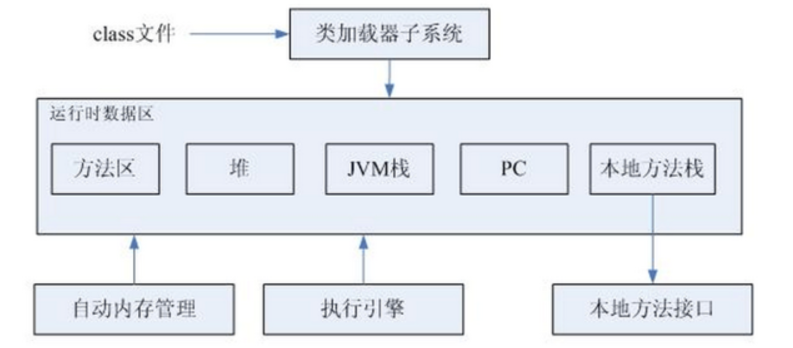
运行时数据区域：
Java虚拟机在执行Java程序的过程中会把它所管理的内存划分为若干个不同的数据区域。这些区域都有各自的用途，以及创建和销毁的时间，有的区域随着虚拟机进程的启动而存在，有些区域则依赖用户线程的启动和结束而建立和销毁。
程序计数器：
是当前线程所执行的字节码的行号指示器。字节码解释器工作时候通过改变这个计数器的值来选取下一条需要执行的字节码指令，分支、循环、跳转、异常处理、线程恢复都依赖该计数器。
线程私有，此内存区域是唯一一个在Java虚拟机规范中没有规定任何OutOfMemoryError情况区域。
Java虚拟机栈：
存储局部变量表、操作数栈、动态链接、方法出口等信息。
线程私有。
局部变量表存放编译期可知的各种基本数据类型、对象引用和returnAddress类型（指向一条字节码指令地址）。
其中64位长度的long和double类型数据占用2个局部变量空间（slot），其余数据类型只占1个字节。
本地方法栈：
虚拟机栈为虚拟机执行Java方法（字节码）服务，本地方法栈为虚拟机使用Native方法服务。
Java堆：
存放对象实例，是垃圾收集器管理的主要区域。
线程共享。
方法区：
存储已被虚拟机加载的类信息、常量、静态变量、即时编译器编译后的代码等数据。
线程共享。
运行时常量池：
是方法区的一部分。具有动态性，不仅预置入Class文件中常量池的内容可以进入方法区运行时常量池，运行期间也可以将新的常量放入池中。
对象的创建：
- 虚拟机遇到一条new指令时，会先去常量池检测能否找到new对应的类的符号引用，并检测这个类是否加载、初始化。
- 如果加载检查通过，则分配内存。分配内存有两种方式：⑴指针碰撞，针对连续内存区域；⑵空闲列表，针对不连续内存区域
- 内存分配完之后，会对内存初始化零值，保证实例字段能在java代码不赋初值也能使用。
- 接下来对对象信息进行设置，把类的元数据信息、对象的哈希吗、对象的GC分代年龄等信息存放在对象头之中
- 最后执行用户的Init方法
对象的内存布局：
- 分为三部分，对象头、实例数据、对齐填充
- 对象头：⑴对象自身运行时数据，如哈希吗、GC分代年龄、锁状态标志、线程持有的锁等。⑵类型指针，虚拟机通过这个来确定这个对象是哪个类的实例。⑶如果对象是一个Java数组，那么对象头中还必须有一块用于记录数组长度的数据。
- 实例数据：对象真正存储的有效信息，也是在程序代码中定义的各种类型的字段内容。
- 对齐填充：JVM要求对象的起始地址必须是8字节的整数倍，因此当对象实例数据没有对齐时，这部分来补全。
对象的访问定位：
使用句柄访问：
Java堆中会划分一块内存作为句柄池，reference中存储的就是对象的句柄地址，而句柄中包含了对象实例数据与类型数据各自的具体地址信息。
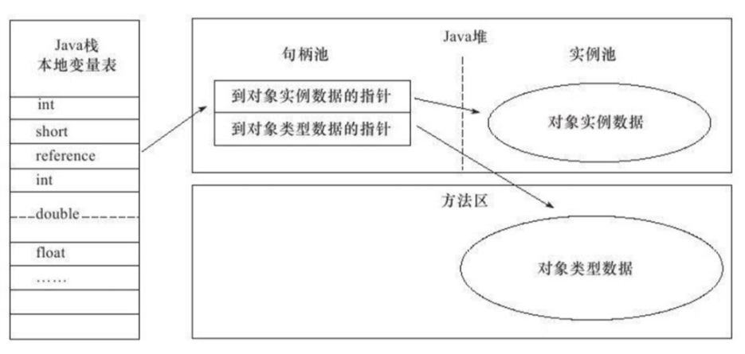
直接指针访问：
那么Java堆对象的布局中就必须考虑如何放置访问类型数据的 相关信息，而reference中存储的直接就是对象地址
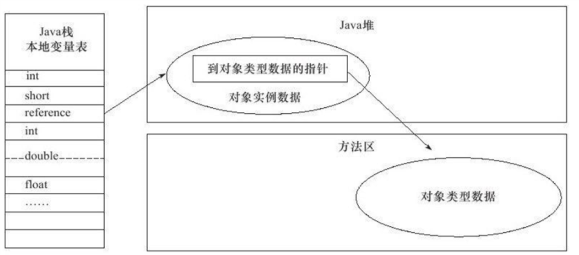
Java垃圾回收区域：
- Java垃圾回收只针对堆和方法区的内存。
- 程序计数器、虚拟机栈、本地方法栈随线程而生，随线程而灭，因此不用管。
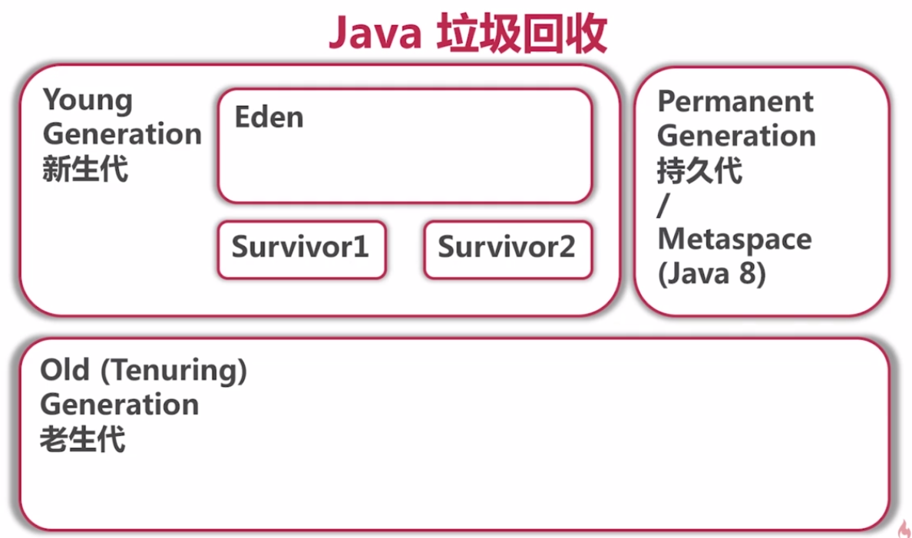
如何确认垃圾：
引用计数算法：
给对象中添加一个引用计数器，每当有 一个地方引用它时，计数器值就加1；当引用失效时，计数器值就减1；任何时刻计数器为0 的对象就是不可能再被使用的。
可达性分析算法：
这个算法的基本思 路就是通过一系列的称为“GC Roots”的对象作为起始点，从这些节点开始向下搜索，搜索所走过的路径称为引用链（Reference Chain），当一个对象到GC Roots没有任何引用链相连 （用图论的话来说，就是从GC Roots到这个对象不可达）时，则证明此对象是不可用的。如图所示，对象object 5、object 6、object 7虽然互相有关联，但是它们到GC Roots是不可达 的，所以它们将会被判定为是可回收的对象。
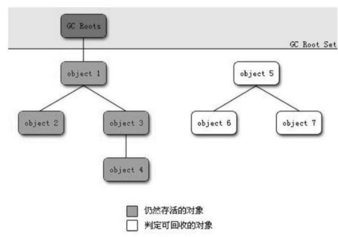
可作为GC Roots对象有：
- 虚拟机栈（栈帧中的本地变量表）中引用的对象。
- 方法区中类静态属性引用的对象。
- 方法区中常量引用的对象。
- 本地方法栈中JNI（即一般说的Native方法）引用的对象。
垃圾回收算法：
标记-清除算法：
首先标记出所有需要回收的对象，在标记完成后统一回收所有 被标记的对象。
不足有两个：一个是效率问题，标记和清除两个过程的效率都不高；另一个是 空间问题，标记清除之后会产生大量不连续的内存碎片，空间碎片太多可能会导致以后在程序运行过程中需要分配较大对象时，无法找到足够的连续内存而不得不提前触发另一次垃圾收集动作。
复制算法：
它将可用内存按容 量划分为大小相等的两块，每次只使用其中的一块。当这一块的内存用完了，就将还存活着 的对象复制到另外一块上面，然后再把已使用过的内存空间一次清理掉。这样使得每次都是 对整个半区进行内存回收，内存分配时也就不用考虑内存碎片等复杂情况，只要移动堆顶指 针，按顺序分配内存即可，实现简单，运行高效。只是这种算法的代价是将内存缩小为了原来的一半。
标记-整理算法：
标记过程仍然与“标记-清除”算法一样，但后续步骤不是直接对可回收对象进行清理，而是让所有存 活的对象都向一端移动，然后直接清理掉端边界以外的内存。
分代收集：
一般是把Java堆 分为新生代和老年代，这样就可以根据各个年代的特点采用最适当的收集算法。在新生代 中，每次垃圾收集时都发现有大批对象死去，只有少量存活，那就选用复制算法，只需要付 出少量存活对象的复制成本就可以完成收集。而老年代中因为对象存活率高、没有额外空间 对它进行分配担保，就必须使用“标记—清理”或者“标记—整理”算法来进行回收。
JVM GC：
枚举根节点
要GC就得枚举根节点，如果逐一去检查引用，效率很低。因此JVM使用一组称为OopMap的数据结构，直接知道哪些地方存放着对象引用。
安全点
可能导致引用关系、或者说OopMap内容变化的指令非常多，不可能为每一条指令都生成对应的OopMap，因此有了安全点，在安全点才记录OopMap，在安全点才能进行GC，例如方法调用、循环跳转、异常跳转等，具有这些功能的指令才会产生安全点
如何让GC发生时线程都跑到安全点
采用主动式中断思想，GC时，不直接对线程操作，而是设置一个中断标志，各个线程执行时主动去轮询这个标志，发现中断标志为真时就自己中断挂起，轮询标志的地方和安全点是重合的
安全区域
如果程序不执行时，比如sleep了，岂不是就进不了安全点？因此有了安全区域，安全区域指在一段代码中，引用关系不会发生变化，在这个区域内GC都是安全的。线程进入安全区域后，会标志自己进入了。JVM要GC时就不会管这些线程。线程要离开安全区域时，必须检查GC是否完成，如果GC完成了线程就继续执行，否则一直等待直到GC完成。
垃圾收集器：
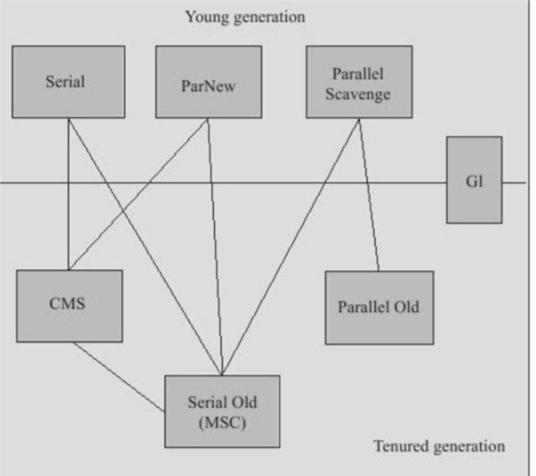
Serial收集器：
单线程，GC时候需要暂停其他所有的工作线程，直到它收集结束。
JVM运行在Client模式下的默认新生代收集器：简单而高效。
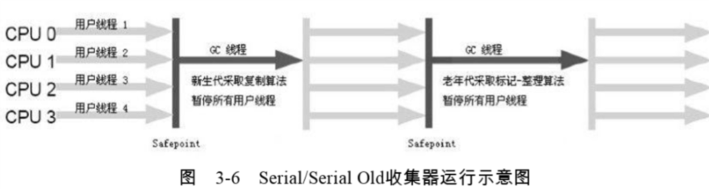
ParNew收集器：
Serial收集器的多线程版本。
许多运行在Server模式下虚拟机的首选新生代收集器。
在单CPU环境次啊ParNew不会有比Serial收集器效果更好，Serial和ParNew都是与CMS配合工作。
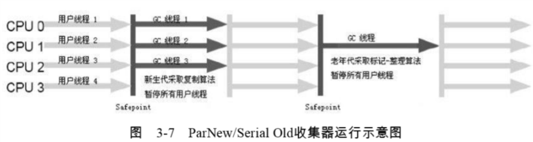
Parallel Scavenge收集器：
新生代收集器，使用复制算法。
关注吞吐量，吞吐量=运行用户代码时间/（运行用户代码时间+垃圾收集时间）。
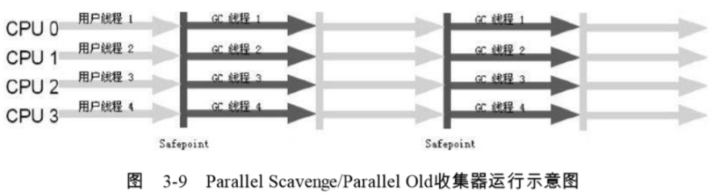
Serial Old收集器：
是Seraial收集器的老年代版本，单线程，采用“标记-整理”算法。
Parallel Old收集器：
是Parallel Scavenge收集器的老年代版本，“标记-整理”。
CMS收集器：
是一种以获取最短回收停顿时间为目标的收集器。
基于“标记-清除”。
初始标记，并发标记，重新标记，并发清除。其中，初始标记、重新标记这两个步骤仍然需要“Stop The World”。初始标记仅仅只是 标记一下GC Roots能直接关联到的对象，速度很快，并发标记阶段就是进行GC RootsTracing 的过程，而重新标记阶段则是为了修正并发标记期间因用户程序继续运作而导致标记产生变 动的那一部分对象的标记记录，这个阶段的停顿时间一般会比初始标记阶段稍长一些，但远 比并发标记的时间短。 由于整个过程中耗时最长的并发标记和并发清除过程收集器线程都可以与用户线程一起 工作，所以，从总体上来说，CMS收集器的内存回收过程是与用户线程一起并发执行的。
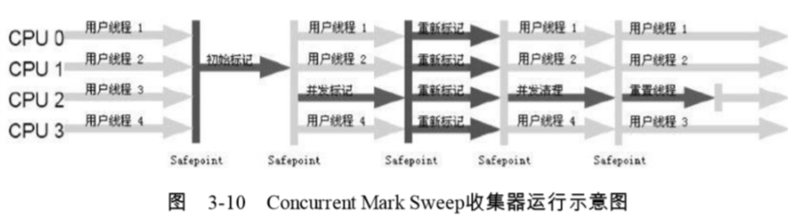
缺点：对CPU资源非常敏感、无法处理浮动垃圾、基于“标记-清除”，产生大量空间碎片。
G1收集器：
是一款面向服务端应用的垃圾收集器，、并行与并发、分代收集、空间整合、可预测停顿
将整个Java堆划分多个大小相等的独立区域（Region），虽然还保留有新生代和老年代的概念，但新生代和老年代不再是物理隔离的。
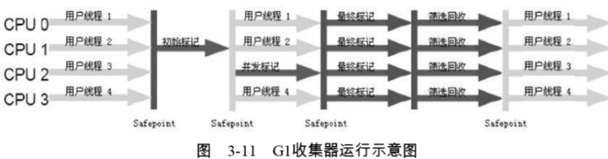
内存分配与回收策略：
- 对象优先在Eden分配。
- 老年代GC（Full GC/Major GC）一般比新生代GC（Minor GC）慢10倍以上。
- 大对象直接进入老年代，大对象指需要大量连续内存空间的Java对象，比如很长的字符串和数组。可通过参数设置。
- 长期存活的对象将进入老年代。默认15岁。
- 动态对象年龄判定。如果Survivor空间中相同年龄所有对象大小的总和大于Survivor空间的一半，年龄大于或等于该年龄的对象就可以直接进入老年代。
- 空间分配担保。当出现大量对象Minor GC后仍然存活的情况，需要老年代进行分配担保，让Survivor无法容纳的对象直接进入老年代。


原文作者: Yang Peng
原文链接: http://ylovex.cn/2019/06/28/jvm自动内存管理机制/
版权声明: 转载请注明出处(必须保留作者署名及链接)